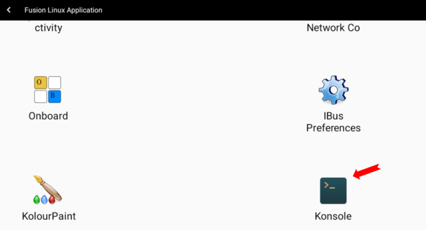
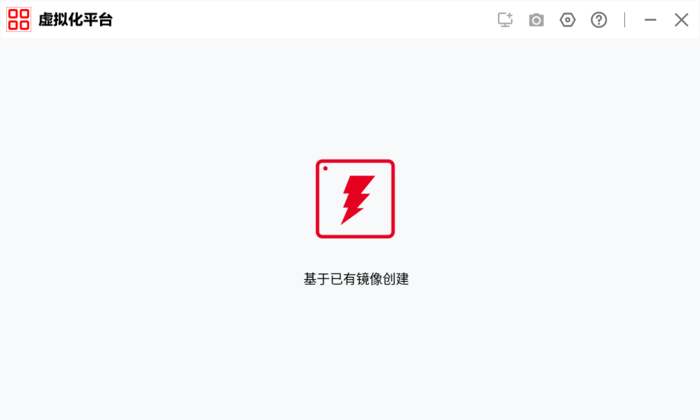
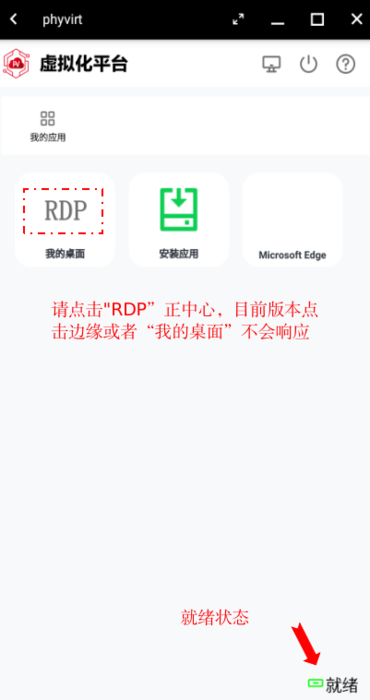

本博客介绍如何在OpenFDE使用win11应用，主要在OpenFDE安装phyvirt-fde，导入已有win11镜像qcow2创建虚拟机，下载win11应用包并安装使用
软硬件资源
- 4CPU,16GB MEM,硬盘60GB
- Kylin V10 SP1
- phyvirt-fde：
- 目前版本仅支持Phytium CPU part为0x662和0x663的机器，可使用命令“cat /proc/cpuinfo”查看是否匹配
- win11虚拟机qcow2：tiny11-vm-vapp.qcow2（7.2GB）
- 使用tiny11制作，它是一款对win11进行极致精简的定制系统,它的特点是在资源受限的情况下，用户依然能够获得流畅的使用体验
- 该镜像用户名与密码都是pvuser,成功创建虚拟机后可自行修改
- 文件存放于夸克网盘，下载链接：https://pan.quark.cn/s/fb58701c4b47
安装前提
OpenFDE已安装完毕并登录OpenFDE桌面
搭建步骤
- 在OpenFDE中点击"开始菜单->Fusion Linux Application",找到linux的终端应用Konsole，输入以下命令安装phyvirt-fde
sudo apt update
sudo apt install phyvirt-fde -y

- 在"开始菜单->Fusion Linux Application"中打开vapp-demo

- 点击“基于已有镜像创建”，找到已有的win11虚拟机qcow2文件(tiny11-vm-vapp.qcow2)打开


- 输入虚拟机名，操作系统类型、CPU数量、内存大小等信息，点击右下角确认创建虚拟机后直接关闭vapp-demo

- 重启系统进入OpenFDE桌面，点击"开始菜单->phyvirt"打开,可见有新建的虚拟机tiny11
ps:当前版本如果不重启会导致之后的步骤phyvirt按钮无法操作

- phyvirt上启动虚拟机
- 待右下角状态为“就绪”，可点击“RDP”进入虚拟机

- 将窗口全屏就可以正常使用了

安装应用
- 方法一
镜像自带有浏览器Edge,可用此下载软件包安装使用


应用展示


致谢
感谢飞腾公司小伙伴基于phyvirt基础上，为OpenFDE提供了phyvirt-fde